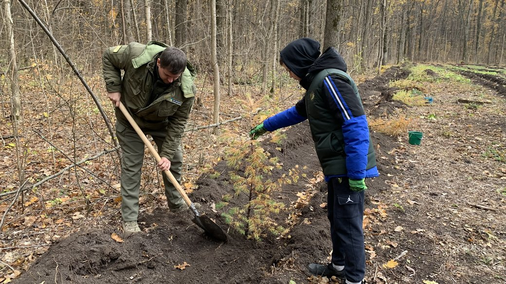
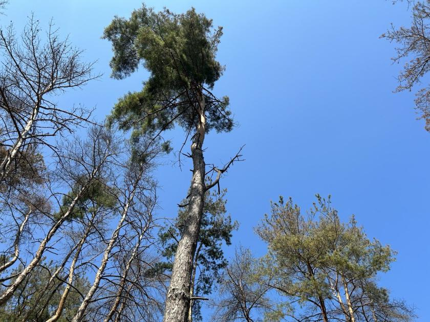

Вплив війни на ліси Харкова

Масштабні лісові пожежі охопили понад 3,700 гектарів (9,140 акрів) лісів у Харківській області, повідомила Державна служба з надзвичайних ситуацій України 1 червня. Пожежі виникли внаслідок принаймні дев'яти окремих загорянь, більшість із яких було спричинено російськими ударами. Шість пожеж, що охоплюють близько 2,300 гектарів (5,680 акрів), вдалося ліквідувати. Робота рятувальників ускладнюється через постійні російські атаки в регіоні та наявність мін і іншого вибухонебезпечного снаряду. Згідно з розслідуванням NGL Media, опублікованим у квітні, з початку повномасштабної війни Росії проти України було знищено понад 60,000 гектарів (148,000 акрів) лісів, що завдало збитків щонайменше на 14 мільярдів гривень ($360 мільйонів). За оцінками Державного агентства лісових ресурсів України, у березні було зазначено, що майже 30% лісів країни постраждали внаслідок бойових дій. Міністр екології України Руслан Стрілець у січні повідомив Deutsche Welle, що екологічні збитки від війни Росії вже перевищили 2.2 трильйони гривень ($56.6 мільярдів). Київ зафіксував 3,600 злочинів Росії проти навколишнього середовища.
Значні пошкодження лісів

Ліси Харківщини зазнали значних пошкоджень внаслідок бойових дій, зокрема через замінування та вирубку дерев для будівництва та військових потреб. Окрім того, забруднення територій промисловими відходами ускладнює відновлення природних екосистем. Наразі активно триває програма відновлення лісових масивів, в рамках якої передбачено висаджування мільйонів дерев, щоб відновити пошкоджені території та зберегти біорізноманіття. Важливо продовжувати ці роботи, щоб забезпечити стабільність екологічної ситуації в майбутньому.
Ліс на Журавльовці

Сосновий ліс поблизу "Каравану" на Салтівці, колись популярне місце для відпочинку харків'ян, переживає серйозні проблеми, які загрожують його подальшому існуванню. Першою проблемою, яку виявили екологи, є поява шкідників — короїдів і кореневої губки. Ці патогени вже вразили більшість дерев, що призвело до їх загибелі. Спочатку ліс виглядав здоровим, але вже влітку 2022 року дерева почали жовтіти, що стало сигналом про їх хворобу. Коренева губка — грибковий патоген, який викликає гниль коренів, є одним із найбільших ворогів хвойних лісів. Він погіршує стан дерев, ускладнюючи їх здатність поглинати поживні речовини та воду. Другим шкідником, що сприяє загибелі лісу, є короїд-типограф. Це комаха, яка харчується корою хвойних дерев, роблячи ходи в корі і призводячи до їх ослаблення. У більш вологих кліматичних умовах сосни та ялини можуть витримати атаку короїдів, але в останні роки через посушливі літа в Харкові ситуація для хвойних дерев стала катастрофічною. Проте не лише природні фактори призвели до проблем лісу. Війна, що розпочалась у 2022 році, також наклала відбиток на стан зелених насаджень. Під час оборони Харкова ліс став місцем розташування окопів та оборонних позицій. Для будівництва бліндажів деякі дерева були спиляні, а деякі викорчувані. Хоча ліс постраждав від людської діяльності в цей період, найбільше шкоди завдала саме хвороба дерев, а не фізичне пошкодження під час бойових дій. Окопи також могли вплинути на стан ґрунту, оскільки порушення водного балансу та висушування ґрунту могло погіршити здоров'я дерев, зокрема сосен.